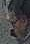

72%
72%
Investigate
Detected Faces
Faces found in event snapshots by the local detector. Every face stays Unassigned until a later phase adds people.
Detected faces
348
All time · since 27 Oct 2026
Today
12
Last at 13:54 · Left Side Outside
Unassigned
348
No identity matching in this phase
Snapshots queued
0
Queue clear · last crop 13:54:19
Face test notifications active until 04 Nov 2026, 16:30:00
One browser notification per detection · cooldown 5 minutes / camera
All detections
Showing 1–8 of 348 detected faces · newest first
72%
84%

66%
91%
78%
88%
Face image unavailable
81%
75%
Page 1 of 44 · 8 per page
…
348 total